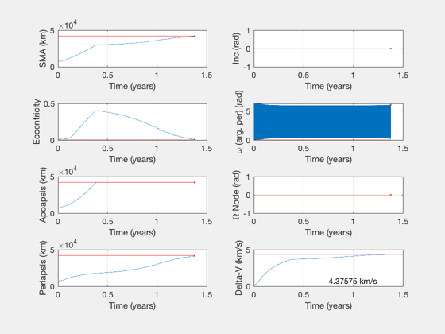
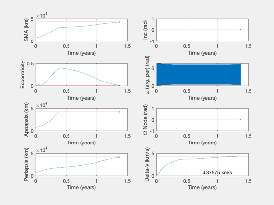

A non-impulsive burn demo with intermittent firing
This continuous burn policy is specified by time duration of burns, rather than true anomaly duration of burns. Variables dAccel.tBurnMax and dAccel.tWaitMin control the intermittency.
This is a demonstration of how IntegrateBurnPolicyContinuous and AccelFromPolicyContinuous can be used by specifying burn durations as a number of sub-burns rather than an arc length in radians.
Takes 20-80 seconds by default.
%-------------------------------------------------------------------------- % Copyright (c) 2019 Princeton Satellite Systems, Inc. % All rights reserved. %-------------------------------------------------------------------------- dSim = IntegrateBurnPolicyContinuous; % Simulation data struct dAccel = AccelFromPolicyContinuous; % Acceleration data struct % Report diagnostic quantities? boolDiagnostic = false; % Initial and final orbits - LEO to GEO, planar dSim.el0 = [7000 0 0 0 0.01 0]; dSim.el1 = [42164 0 0 0 0 0]; dAccel.el1 = dSim.el1; % Simulation time dSim.tMax = 8e7; % Seconds dAccel.tMax = dSim.tMax; % Spacecraft parameters dAccel.aMag = 1e-6; % Accel. km/s/s dAccel.Isp = []; % Isp, seconds dAccel.tBurnMax = 1000; dAccel.tWaitMin = 1000; % Discretized burn durations (number of sub-burns), linear in time % If .tBurnMax and .tWaitMin are not set, burn durations are in units of % seconds. dAccel.useNuDuration = false; % use time instead of true anomaly dAccel.ap = [3 6]; % apoapsis correction, at periapsis. dAccel.per = [0 6]; % Periapsis correction, at apoapsis. dAccel.inc1 = [0]; % Plane correction at node 1. dAccel.inc2 = [0]; % Plane correction at node 2. odeOpts = odeset( 'AbsTol', 1e-8, 'RelTol', 1e-6 ); fAcc = @AccelFromPolicyContinuous; [x,t,out] = IntegrateBurnPolicyContinuous(dSim,fAcc,dAccel,odeOpts,boolDiagnostic); tDuration = t(end); [tNum,~,tUnit] = TimeLabl(tDuration); fprintf('Time to reach target is %.3g %ss. \n',tNum,tUnit); fprintf('Delta-V via the integrator is %.3g km/s. \n',x(7,end)); PlotTrajectoryContinuous(x,t,dSim.el1); PlotElementsContinuous(x,t,dSim.el1); if boolDiagnostic PlotDiagnosticContinuous(x,t,out.asVec,dAccel); end %--------------------------------------
ODE int percentage: 0. 10. 20. 30. 40. 50. 100. 92.9653 sec The ode solver picked 163544 points. All elements agree! Time to reach target is 1.38 years. Delta-V via the integrator is 4.38 km/s.
 
